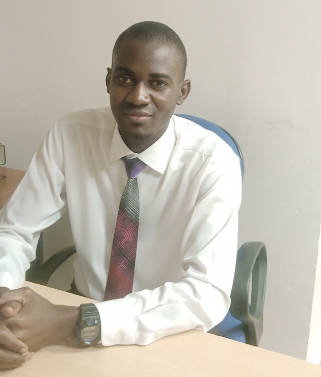

I'm a chemistry graduate, QAQC/HSE/PMP certified professional with a strong inquisitive mindset and problem solving drive. I'm skilled in HTML, CSS, responsive web design, graphic design, and video editing. I bring the same precision from my experience in lab quality control, brewing and banking operations, business developement and project management to every project. I'm adaptable across industries and I'm open to opportunities where I can add value in tech, operations, or any role that needs detail and results. I'm continuesly developing myself across both technical and creative areas.
BSc. Chemistry
Sympony Global Institute | Mar 2025
Access Bank Plc | YOE Intern
Retail Operations / Bullion Unit
Oct 2025 - May 2026 | Uyo
PalmPay Limited | Business Developer
Sales Department
Jun 2025 - Oct 2025 | Uyo
KekeAds | Project Manager
Operations
Sep 2024 - Mar 2025 | Uyo
Champion Breweries Plc | NYSC Intern
Brewing (Quality and Production)
Mar 2024 - Mar 2025 | Uyo
Kaduna State Water Corporation | Student Intern
Quality Control
Jun 2021 - Dec 2021 | Kafanchan